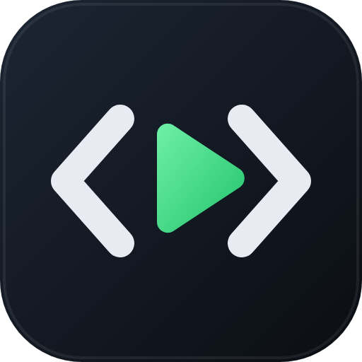

راك فاتح هذي الصفحة من داخل تطبيق (إنستغرام، فيسبوك…) وما يخليكش تحمّل. اضغط ⋯ فوق واختار فتح في المتصفح.
افتح في Chrome
برمج
شغّل كل لغات البرمجة من هاتفك
ثبّت على iPhone حمّل لـ Android APK · ≈ 1 MB افتحو في المتصفح (Android وiPhone)- 53لغة برمجة
- Python · C · C++بلا إنترنت
- ⚡شرح الأخطاء بالعربية
- مجانيبلا حساب وبلا إعلانات
كيفاش تثبّتو
- اضغط حمّل لـ Android فوق.
- افتح الملف Barmaj.apk من الإشعارات ولا من التنزيلات.
- إذا الهاتف قالك "غير مسموح"، اضغط الإعدادات وفعّل السماح من هذا المصدر، ومن بعد ارجع.
- اضغط تثبيت. برمج يبان مع تطبيقاتك.
عندك iPhone؟
- افتح برمج في Safari.
- اضغط زر المشاركة تحت.
- هبط واختار إضافة إلى الشاشة الرئيسية، ومن بعد إضافة.
- برمج يبان مع تطبيقاتك ويخدم حتى بلا إنترنت.